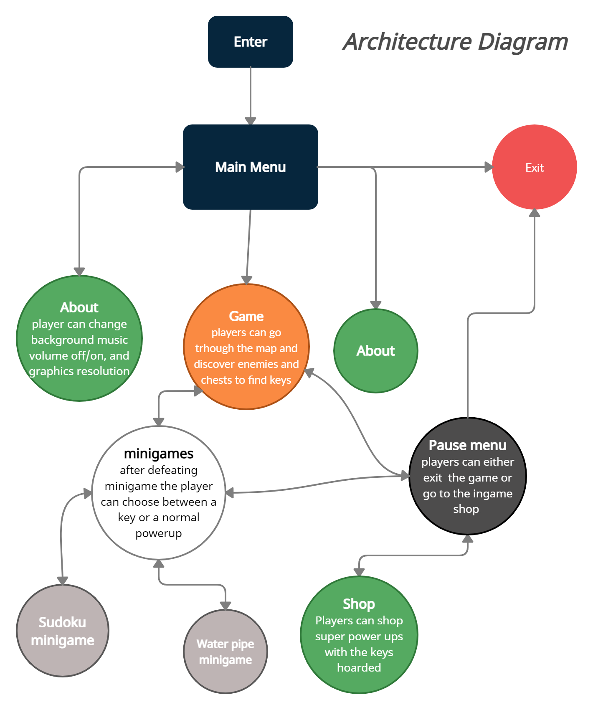

Design
Architecture design:

The image shown is the Singleton architecture design. all scenes connect to the main menu scene.
Each scene has its own mechanisms and purpuses but share a common robust source.
Overview of project
- Have a main menu that will divert to the scene the player wants to go to.
- Will have several minigames the player can go to, and settings the player can move.
- Will have a pause menu where the player can quit the game.
SudokuGrid
- Rendering a 9 by 9 squares grid for sudoku
- recieving an array and puting the values into the grid, and eventually deciding if the number inputted is correct
- If the number is incorrect loose a live.
- Creating random valid sudoku grids.
- making the missing spots by an algorithm, depending in dificulty level
Chest
- SInteract with chest
- button to open chest
- when button is clicked go to sudoku
- Rarity
- Dificulty
- Rewards
Pause
- Freeze everything on game
- Can exit the game from here
- Can go to shop from here
WaterpipeGame
- Randomize puzzles
- It would give you an unique power up
Settings Menu
- Music Volume on/of
- Graphics resolution.